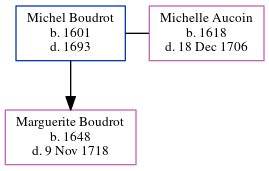

Michel Boudrot 1601 - 1693
[ Home ] | [ Calendar ] | [ Surnames Index ] | [ Census Index ] | [ Family History ]Michel Boudrot, the 10 times great-grandfather of Michele Copp (née Phillips), was born in Cougnes, La Rochelle, Manche, Basse-Normandie, France in 16011 and married Michelle Aucoin (with whom he had 1 child, Marguerite) in France in 16401.
He died in 1693 in Port Royal, Acadia, Nova Scotia, Canada.
Children
- Marguerite was born in 1648
Citations
- U.S. and International Marriage Records, 1560-1900 Online publication - Provo, UT, USA: The Generations Network, Inc., 2004.Original data - This unique collection of records was extracted from a variety of sources including family group sheets and electronic databases. Originally, the information was deriv
Family Tree
Generated by ged2site. Last updated on Jun 6, 2024